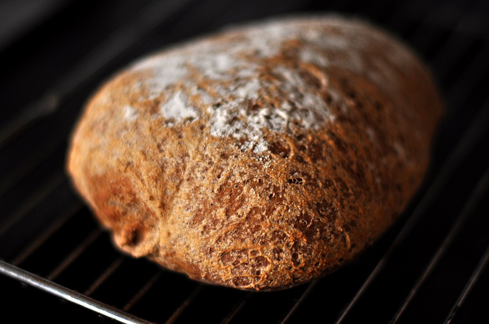

Bread made from wheat-grain you've ground yourself, is a special experience. The bread has a lot of flavour, and is quite heavy and dense. You probably won't want to eat this everyday, unless you love heavy breads, but it certainly is something you might want to try at least once in your life.
You can grind wheat with an electric grinder instead, but that just takes the joy out of doing it the old fashioned arm-breaking way. Which would I choose today? Definitely the easier electric way, but I feel like everyone should have to suffer the pain of doing it the old fashioned way first.
I started griding grain by hand at the age of 8. My parents bought a hand-grinder, and got large 10kg bags of grain that they'd dump into massive plastic drums that kept out the mice. I hated eating the bread I made from this grain, because it was tough and heavy, but it was the only bread I had access to, and I made bread this way every day from the age of 8 until I was 16, so got good at it.
People tend to think that making bread is difficult, but it isn't that hard. Just requires know how and some muscle-power.
I didn't use any measuring items as a kid, as we didn't have measuring cups or scales or teaspoons, so I created it through going off eye and how heavy it felt. I am providing measurements here though, so that you don't have to learn through trial and error.